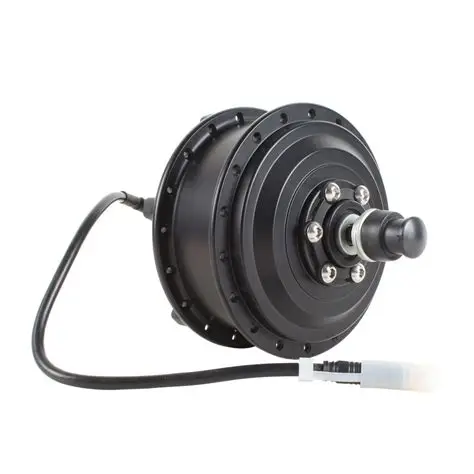
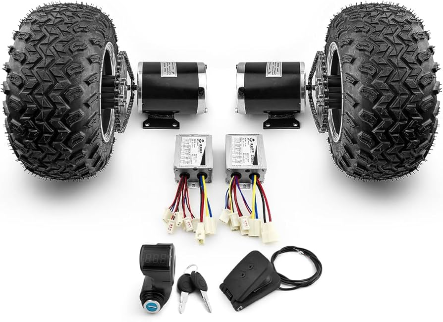
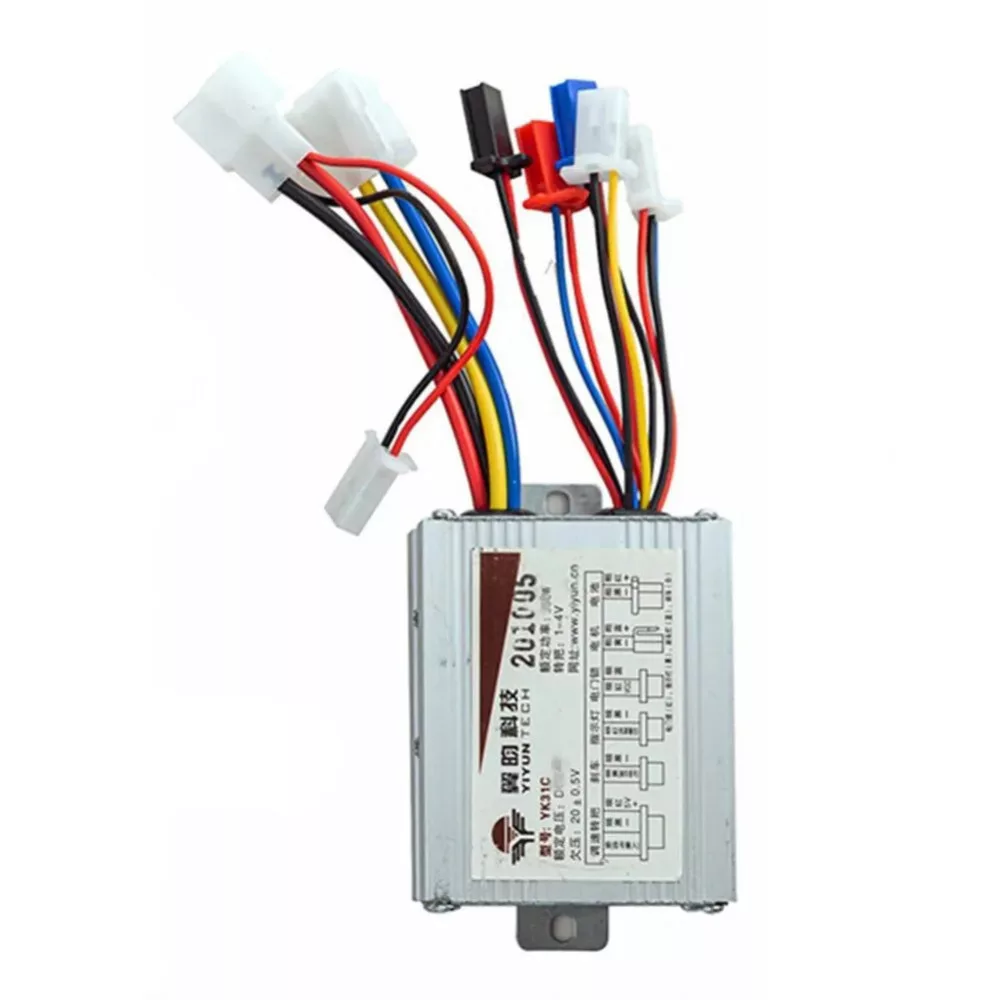
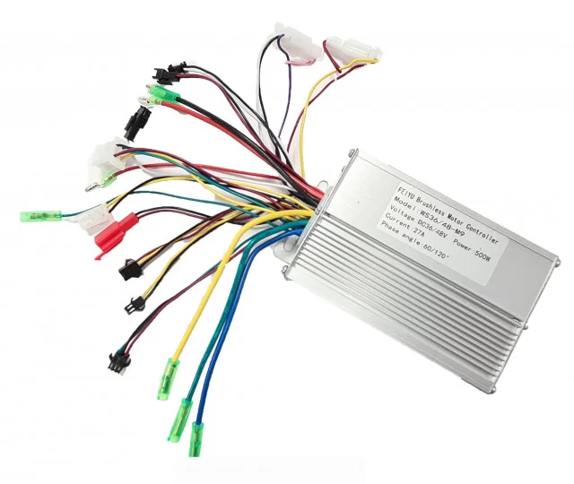

Elektromos Motorok
Mi az a BLDC motor?
Az elektromos rollerekben BLDC (Brushless Direct Current), azaz kefementes egyenáramú motorokat alkalmaznak. Ezek csendesek, energiahatékonyak, minimális karbantartást igényelnek és hosszú élettartamúak. A legtöbb rollerben kerékagyba épített hub motor található, ami közvetlenül a kerékbe van integrálva.
Teljesítmény kategóriák
- 250 W: Városi közlekedéshez, egyenes úton, könnyebb sofőrnek. Legális EU-s kategória.
- 500 W: Enyhébb emelkedőkre is alkalmas, jobb gyorsulás és terhelhetőség.
- 1000 W+: Meredek kapaszkodókra, terep-rollerekre, nagyobb testsúlyhoz.
Termékeink

250 W Hub Motor
BLDC · 36V · 8,5" kerékhez · 6,7 kg · csendes üzem
24 990 Ft

500 W BLDC Motor
BLDC · 48V · 10" kerékhez · 8,2 kg · IP54 vízállóság
44 990 Ft

1000 W Dual Motor Kit
2× BLDC · 52V · 10" kerékhez · 2×9 kg · offroad teljesítmény
89 990 Ft

Motorvezérlő (Controller) 36V
36V · 15A · FOC vezérlés · regeneratív fékezés · IP65
12 990 Ft

Motorvezérlő (Controller) 48V
48V · 25A · FOC vezérlés · regeneratív fékezés · IP65
18 990 Ft